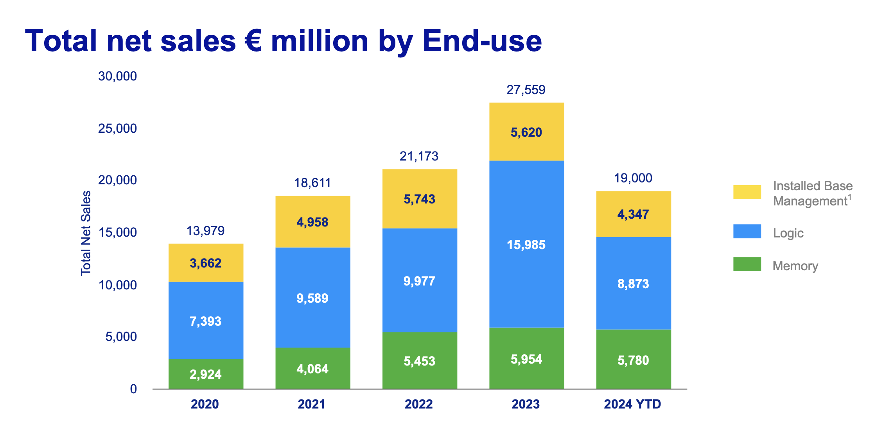
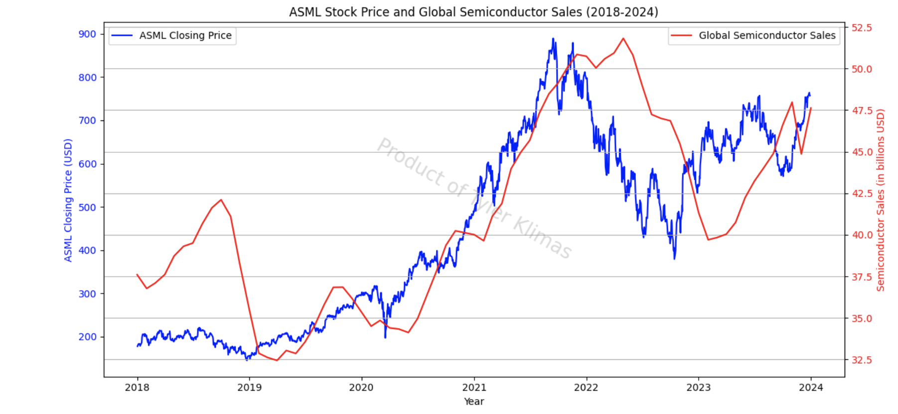
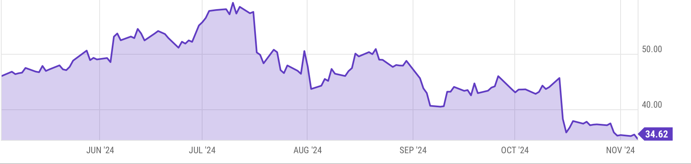
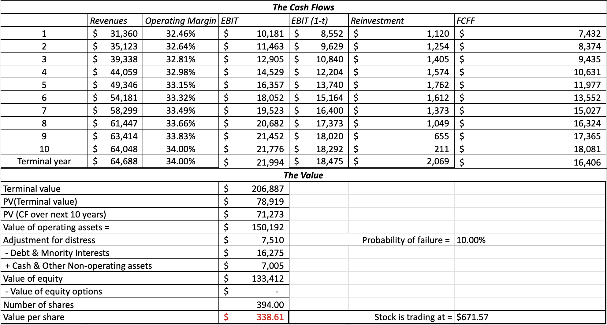
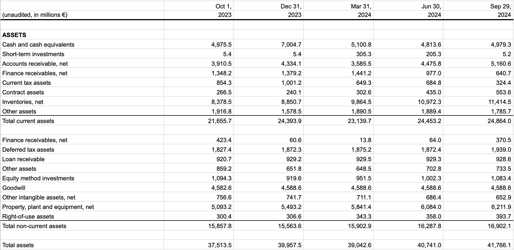

☰

ASML
2024 Q3 Analysis
November 7th, 2024
ASML is a multinational semiconductor tool manufacturer domiciled in the Netherlands, specializing in the design and production of ArFi (Deep Ultraviolet Lithography) and EUV (Extreme Ultraviolet Lithography) machines critical for the production of semiconductor nodes and DRAM memory.
Q3 Results: ASML reported Q3 results on October 15th and subsequently the stock fell nearly 20%.
This was due to its reduced 2025 projected revenue from €30-40B to €30-35B.
With predicted total net sales between €8.8 and €9.2 Billion in Q4,
ASML will be growing marginally YoY.
Revenue from logic (EUV) and memory (ArFi) will remain constant YoY, with a ~10% increase
in machine servicing,
revealing that fabs are choosing to use their existing equipment until upgrading to the newest generation.

The reduction of projected revenue is due to the highly cyclic business of semiconductor and memory production.
Chip sales are often a lagging indicator of upstream industries because of the nature of chip contracts.
Semiconductor fabrication is a lengthy process which can take 3-6 months from start to finish due to the
complex supply chain and rigorous quality control. Chip fab contracts are set far in advance which means
changes in demand don’t immediately affect price.
As seen below, there was a peak in semiconductor sales in 2022 after
increased demand for consumer electronics and auto & industrial chips spurring
from COVID stimulus, and demand
has not returned to these levels. Not all chips are created equal,
and the leading edge chips required for AI Datacenters has kicked off a new
cycle of investment in 2023 and 2024. This cycle is separate from the legacy chips used in consumer
electronics or in the automotive industry because AI accelerator chips require <5nm whereas legacy
chips do not require the cutting edge EUV.

ASML sits at the very base of the semiconductor value chain and therefore takes the longest for
demand changes to hit the bottom line of ASML’s business.
The recent price action is a correction from the high multiples ASML was trading
at stemming from the speculation of AI related companies.
ASML P/E Multiple

AI Breakdown from Market Perspective
Amid the significant investment into AI technologies over the last 2 years, companies positioned to capture value in AI stack have captured immense value.
There is evidence pointing to continued investment into this domain in 2025 and ASML is positioned to benefit.
At the top of the food chain, you have the American hyperscaler companies which operate data centers which much of the world's computing runs on. After
Q3 reports for MSFT, AMZN, and META showed impressive earnings amid large CapEx spends for
AI infrastructure, CapEx estimates for 2025 are north of $200B. Majority of this spending is
in datacenters, where ~75% of CapEx is AI accelerator chips.
Next, you have the American “fabless” chip designers which have received a bulk of the attention over the last 12 months. NVIDIA is now the most valuable company in the world by market cap. Quallcomm, AMD, and Broadcom have all had significant returns even while capturing single digit numbers in this space. Extremely large margins are made in this stack of the value chain, where NVIDIA has margins of 75%. NVIDIA has an incredibly strong moat and will be the largest player in this space for a minimum of 5 years. They have 10,000 software engineers writing the proprietary software CUDA which allows for parallel processing on the chip, greatly increasing the amount of FLOPS and therefore increasingly powerful models.
Below this is the chip foundries, such as TSMC, Samsung, and SMIC, which fabricate the chip designs. TSMC controls this market with 61.7% market share, Samsung sits at 11% amid its growing foundry buildout, and the rest such as SMIC have ~5%. Not only do foundries fabricate leading edge chips, which are highly efficient and used in high end cell phones and data centers, but also fabricate mainstream nodes for vehicles, consumer electronics, etc which are not as constrained for power or speed as their high end counterparts.
Next are the component manufacturers, which are highly regionalized around the globe. South Korea dominates the memory business with Samsung and SK Hynix having a near duopoly in the industry for DRAM and NAND. AI Accelerator chips require a specialized type of DRAM called HBM (High Bandwidth Memory) which is stacked on top of the GPU for better performance by utilizing a larger bus for higher bandwidth as well as multiple channels to increase throughput.
SK Hynix got the first movers advantage leading to a breakout year for them in 2024, but Samsung has recently met quality standards for HBM3E and will likely begin to supply for AI accelerator chips. Japan is the largest producer of the chemicals and silicon wafers (Shin-Etsu, SUMCO, etc). Smaller players like Austria are even specialized in a specific niche in the supply chain of materials (EV group with Multibeam Masks) creating a highly globalized and fragmented global supply chain.
Finally, the group which ASML sits in, is the semiconductor manufacturing equipment providers.
ASML competes with Applied Materials, Lam Research, and KLA corporation. These companies produce
equipment for etching, patterning, and inspecting silicon wafers. ASML is the sole company which
has developed EUV (Extreme Ultraviolet Lithography) and allows for the creation of chips below
5nm. This industry segment allows for the production of leading edge chip technology,
as well as legacy equipment service which is still essential in building lower end nodes in the
14nm-65nm range as well as
for the production of memory chips.
Value per Share
For this model I chose a conservative growth rate of 12% considering
ASML's' CAGR of 17.5% from 2014 to 2023.
This model suggests ASML is overvalued relative to its future cash flows, as the calculated intrinsic
value is below the current stock price. This discrepancy implies that the market is pricing in continued
high growth and innovation, which ASML would need to achieve consistently to justify its current valuation.

ASML Financial Health

In the event of a prolonged downturn in demand for ASML machines, ASML has a strong balance
sheet with nearly €5 Billion in Cash and Cash Equivlants. This maintains a very strong liquidity buffer
and runway to invest in R&D to capitalize on the next cycle.
ASML has a debt-to-equity ratio of 29.1%,
which shows that the business is not overly levered
and does not run the risk of insolvency.
ASML's inventory has grown from €8.4 billion to €11.4 billion over the last 12 months,
reflecting the company's anticipation of increased demand for its products. However, this growth also raises
questions about potential risks, including the possibility of excess inventory,
which could impact cash flow and financial flexibility if sales do not keep pace with production.
Comparable Analysis
ASML is trading at a premium when compared to competitors in the equipment manufacturing
segment of the semiconductor industry. However, this is only to get an idea what other similar
companies are trading at. ASML does not have any real competition because they are the only
company proved successful at manufacturing EUV. This process underpins all leading edge chips, and
the next closest competitor is many years behind in development.
Geopolitical Implications
ASML occupies a position in global geopolotics because their machines have
a significant strategic position in developing high impact technologies. The Dutch Government has been aligned
with the US Government since 2019 to enforce export controls on ASML's equipment to China. EUV exports are
banned to China, however many of their lower end tools are free to be imported. For example, in 3Q24, China accounted
for %47 of revenue for ASML while China was acquiring equipment such as DUV. These purchases were for production of mainstream
nodes and memory for industies such as automotive or industrials. This partly explains the dip in forecasted revenues in 2025, as ASML predicts
China will return to normal levels of ~20%.
As the "AI Arms Race" between world superpowers increases, countries are moving to build
datacenters capable of training ever more powerful models for national security measures. The US has
explicity banned the export of essential components of the AI stack such as GPU Accelerated Chips. There has also
been efforts to reshore silicon production in the US for economic and security reasons. There exist plans
to open several fabs in the US such as Intel's Ohio and Arizona fab, TSMC's Arizona fab, and Samsung's Texas Fab, all
of which are supported by the CHIPS act. However, none of these are operational yet, and much of the funding is yet to be
disbursed. This proves a substanial market oppurtunity for ASML as these faciliaites will be focused on
producing sub 7nm chips and require ASML's propietary technology.
Verdict
With an AI investment boom kickstarted from the significant spending of the Hyperscalers to build AI infrastructure, value is going to undoubtedly
flow downstream to the vast supply chain of companies supplying this demand. For ASML, at the bottom of the
pyramid, several players have already eaten large amounts of margins from the pie. However, the bottom of the pyramid
is the most stable, with a business model that is going to be successful regardless if AI proves to be a ship
that never leaves the dock.
ASML is a company that isn't leaving the picture anytime soon. Their machines underpin
a great deal of the global economy. I am looking for the oppurtunity to add this to my portfolio
to add exposure to AI growth but hedge some of the risk with a business model that supplies many industries.